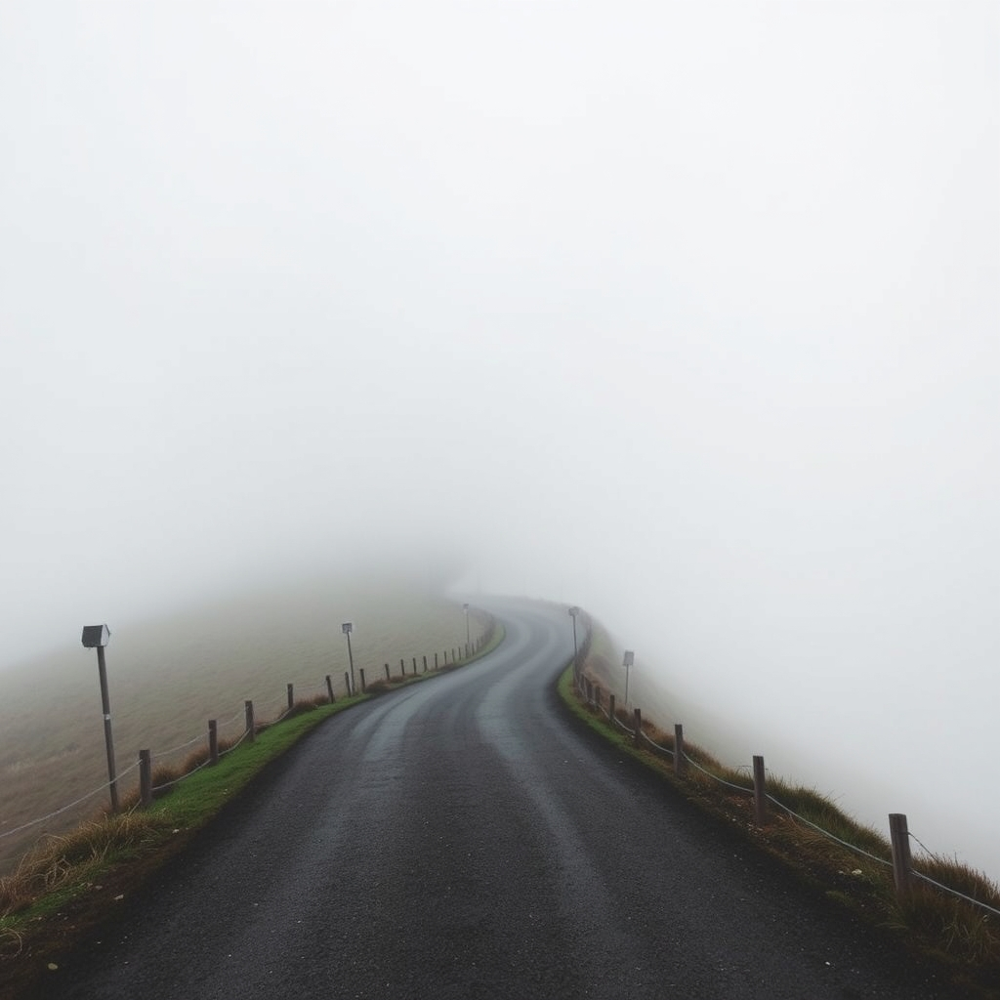
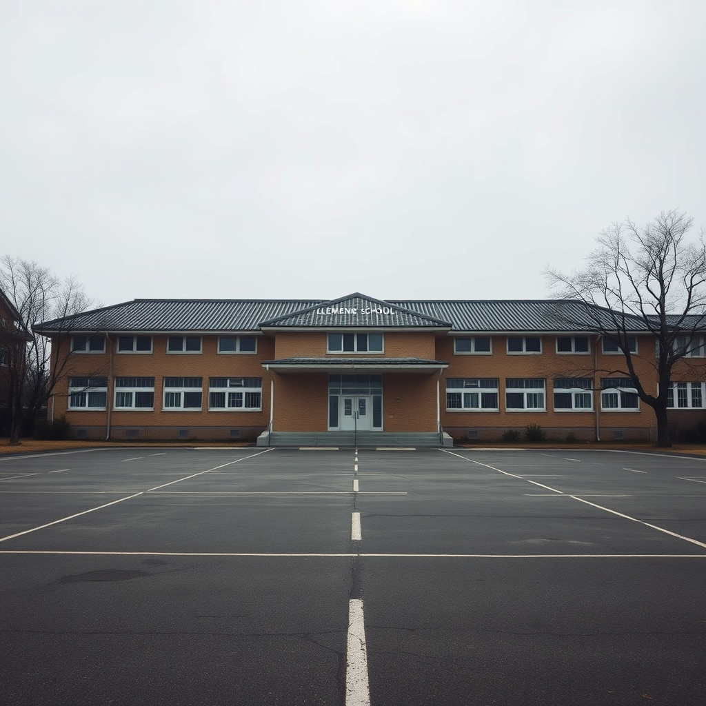
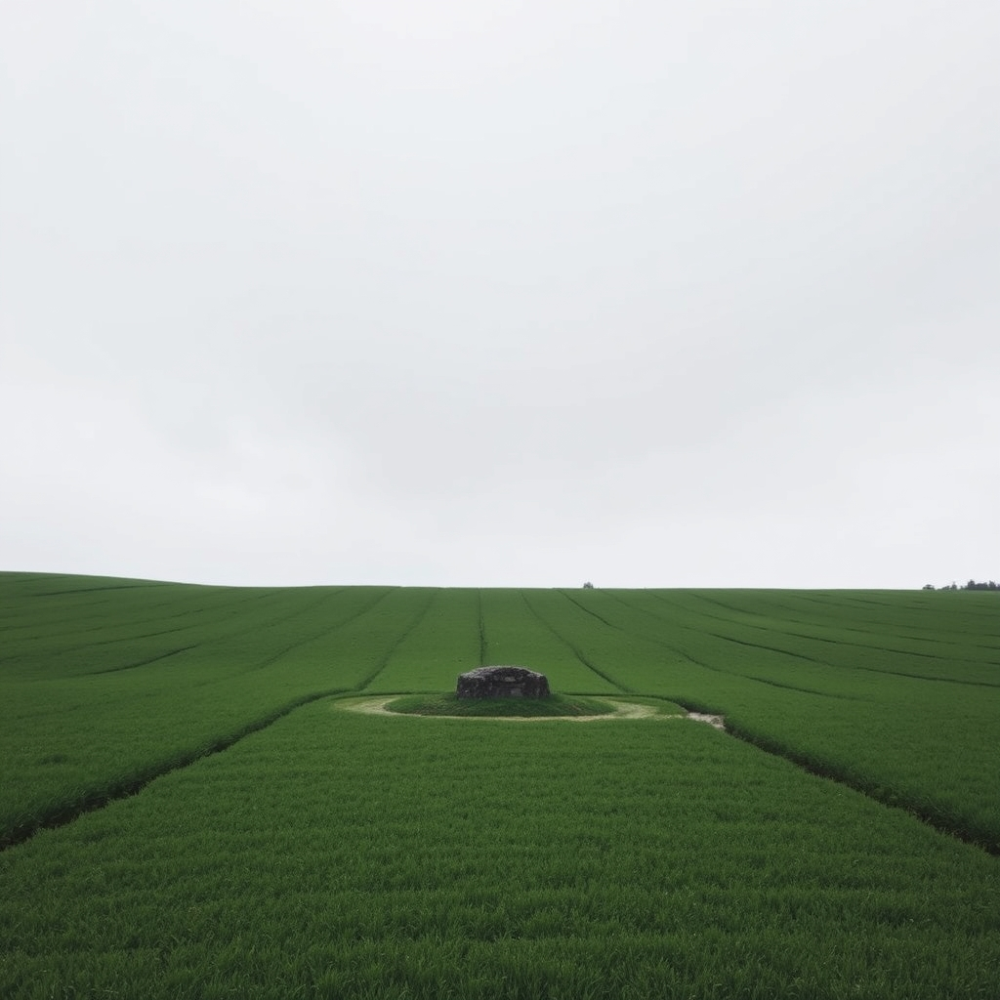
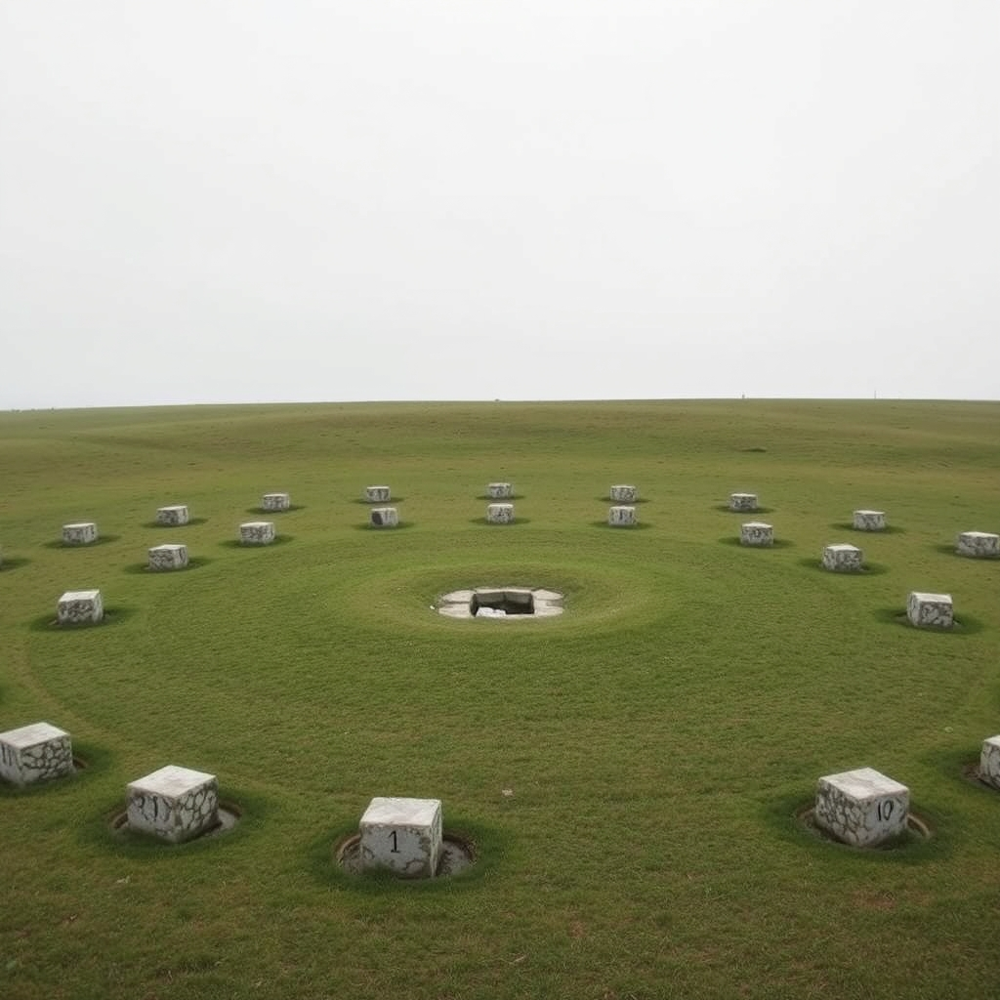
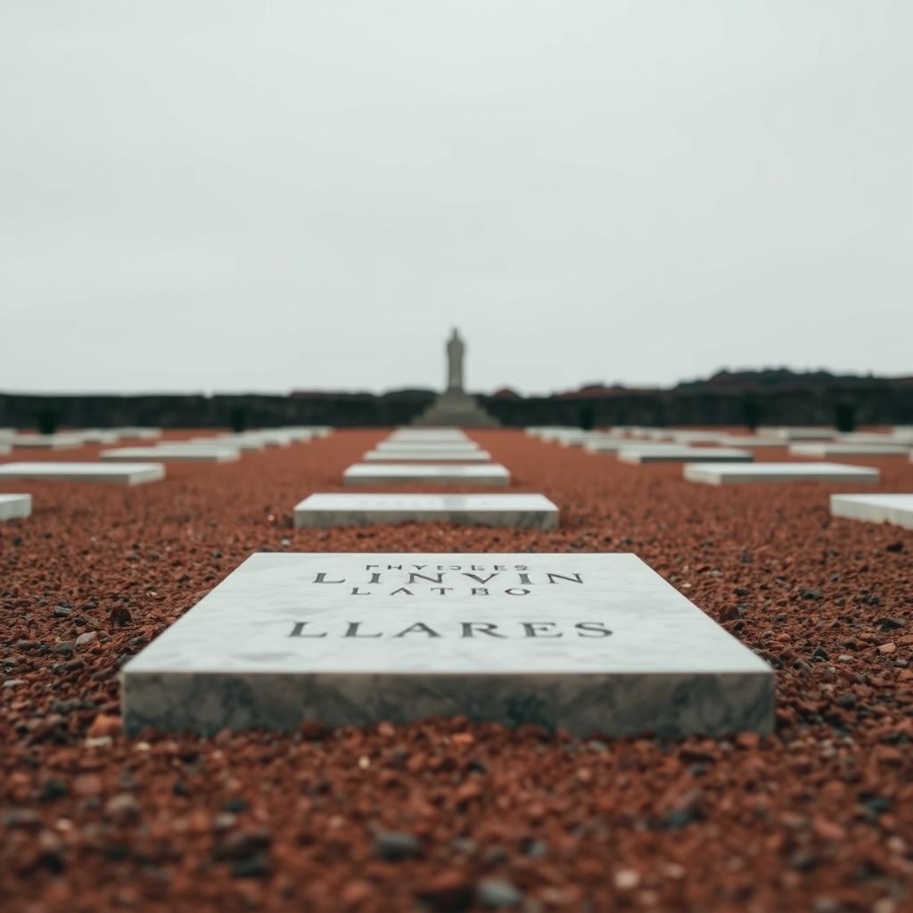
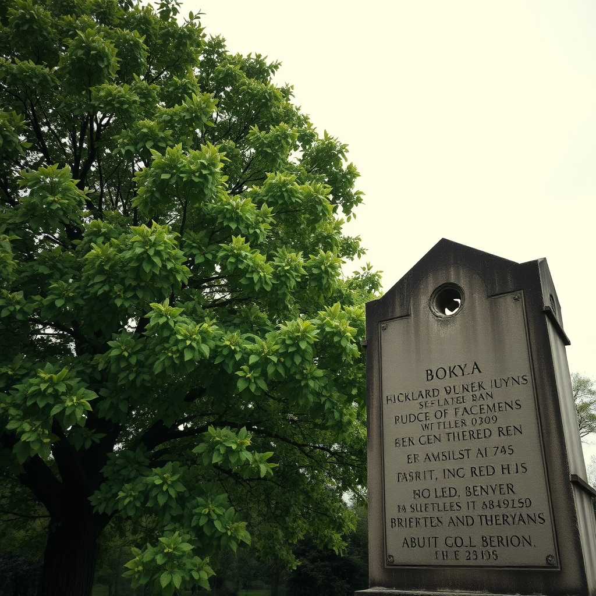

해마다 명절처럼, 이 마을 사람들은 같은 날 같은 시간에 제사를 지낸다고 합니다. 왜 이 북촌마을은 제사를 한 날 한 시에 지낼까요? 제주시 조천읍 동쪽 끝, 바다와 맞닿은 이 조용한 해변마을에는 1949년 1월 17일 한 날 한 시에 벌어진 일이 아직도 마을 전체의 기억으로 남아 있기 때문입니다. 너븐숭이 4·3기념관(조천읍 북촌3길 3)은 그 아픔을 기억하기 위해 2009년 조성된 추모공원으로, 위령비·기념관·방사탑을 품고 있습니다. 이 이야기는 그 날, 그리고 그날 이후에도 오랫동안 이어진 상처와 회복의 시간 이야기입니다.
Every year, as if it were a holiday, the people of this village hold ancestral rites on the very same day and hour. Why does Bukchon Village mark its rites at one single date and time? At the eastern edge of Jocheon-eup, Jeju City, this quiet coastal village still holds, as a memory shared by the whole community, what happened here in a single day and hour on January 17, 1949. The Neobeunsungi 4·3 Memorial Hall (Bukchon 3-gil 3, Jocheon-eup) is a memorial park built in 2009 to remember that pain, home to a memorial monument, an exhibition hall, and a bangsatap (stone guardian tower). This is the story of that day — and of the long years of wound and recovery that followed.
북촌은 포구를 중심으로 '본동', 서쪽에 서우봉과 접한 '해동', 남쪽 중산간 방향의 '억수동', 그리고 1990년대에 새로 조성된 '한사동'까지 네 개의 자연마을로 이루어진 마을입니다. 일제 강점기에는 항일 운동에 나선 이들이 많았고, 해방 뒤에는 지역 자치조직이 활발했습니다. 그런데 1947년 8월 13일, 삐라(전단)를 붙이던 주민들을 향해 경찰이 발포해 3명이 다치는 일이 벌어졌습니다. 이 일은 작은 불씨처럼 시작되었습니다. 1948년에도 사건들이 이어졌습니다. 4월 21일에는 무장대가 북촌리 선거관리위원회 사무소를 공격해 선거기록을 가져가 버렸고, 6월 16일에는 북촌포구에서 우도지서 경찰관 2명이 무장대에게 목숨을 잃었습니다. 12월 16일에는 마을을 지키며 토벌대에 협조하던 민보단원 24명이 구좌읍 동복리 '낸시빌레'에서 군인들에게 집단총살당했습니다. 그리고 1949년 1월 10일, 북촌국민학교가 개교 7년 만에 문을 닫았습니다. 결정적인 날은 1949년 1월 17일 새벽이었습니다. 너븐숭이 고갯길에서 군인 2명이 무장대의 습격으로 숨지자, 함덕에 주둔하던 2연대 3대대 군인들이 보복에 나섰습니다. 마을에 불을 지르고, 주민들을 북촌국민학교 운동장으로 불러 모았습니다. 군경 가족과 민보단 가족을 제외한 주민들을 동쪽의 당팟과 서쪽의 너븐숭이·옴팡밭으로 4·50명씩 끌고 가 총살했습니다. 학교 주변에서 300여 명이 희생되었고, 이튿날까지 400명 가량이 집단총살되었습니다. 행방불명자를 포함한 전체 희생자는 434명이라는 기록도 있습니다 — 하나로 단정하지 않고 이 세 수치를 함께 기억합니다. 살아남은 주민들은 함덕으로 소개되었고, 5개월 만에 마을을 복구했고, 2년 9개월 만에 학교가 다시 문을 열었습니다. 폐교 당시 재학생 216명은 53년 만에 명예졸업장을 받기도 했습니다. 이곳에 붙은 지명 하나하나가 사건을 품고 있습니다. '너븐숭이'는 넓은 돌밭, '옴팡밭'은 오목하게 쏙 들어간 밭, '당팟'은 그때 주민들이 끌려와 총살당한 동쪽 들판, '낸시빌레'는 민보단원들이 희생된 곳입니다. 옴팡밭 한가운데에는 당시 희생된 어린아이의 작은 무덤도 있습니다.
Bukchon is made up of four natural hamlets centered on its harbor: 'Bondong,' 'Haedong' bordering Seoubong to the west, 'Eoksu-dong' toward the inland hills to the south, and 'Hansa-dong,' newly formed in the 1990s. Many villagers took part in anti-Japanese resistance during the colonial period, and after liberation, self-governing organizations centered on People's Committees were active here. On August 13, 1947, however, police opened fire on villagers who were putting up leaflets, injuring three. It was a small spark. More incidents followed in 1948: on April 21, an armed group attacked the Bukchon-ri election management office and seized the election records; on June 16, two police officers from the Udo substation were killed by an armed group at Bukchon harbor; on December 16, 24 members of the local defense corps who had cooperated with the suppression forces while guarding the village were shot to death by soldiers at 'Naensibille' in Dongbok-ri, Gujwa-eup. Then, on January 10, 1949, Bukchon Elementary School closed, just seven years after it opened. The decisive day came before dawn on January 17, 1949. When two soldiers were killed in an ambush by an armed group on the Neobeunsungi hill road, soldiers of the 3rd Battalion, 2nd Regiment stationed in Hamdeok set out for revenge. They set the village on fire and gathered the residents in the schoolyard of Bukchon Elementary School. Excluding the families of police and of local defense corps members, they marched the villagers in groups of 40 to 50 to Dangpat in the east and to Neobeunsungi/Ompangbat in the west, and shot them. Around 300 people were killed near the school that day, and by the next day the number of those massacred reached about 400. Another record, including the missing, puts the total number of victims at 434 — rather than settle on one number, this page remembers all three together. Survivors were evacuated to Hamdeok. The village was rebuilt within five months, and the school reopened after two years and nine months. The 216 students who had been enrolled when the school closed received honorary diplomas 53 years later. Every place name here carries a piece of this history. 'Neobeunsungi' means a wide field of stones, 'Ompangbat' a concave field, 'Dangpat' the eastern field where villagers were marched and shot, and 'Naensibille' the place where the defense corps members died. At the center of Ompangbat lies the small grave of a child killed that day. [Source: Jeju 4·3 Incident Chronicle · on-site board; on-site information board; memorial (2013)]
⚖️ 기록마다 다릅니다 — 북촌대학살 희생자 수
| 출처 | 기록 |
|---|---|
| 북촌마을 안내판·추념비(2013) 뒷면 | 300여 명 (1월 17일 당일 학교 주변 학살) |
| 제주4·3사건일지·너븐숭이 안내판 | 400명 가량 / 400여 명 (이튿날까지의 집단총살) |
| 추념비(2013) 뒷면 | 434명 (행방불명 포함 전체 희생자) |
본문은 "학교 주변에서 300여 명이 희생되었고, 이튿날까지 400명 가량이 집단총살되었습니다. 행방불명자를 포함한 전체 희생자는 434명이라는 기록도 있습니다"라는 문장으로 세 수치를 모두 병기함
이 마을이 왜 명절처럼 한 날 한 시에 제사를 지내는지, 이제 조금 알 것 같습니다. 어른들의 시신은 살아남은 사람들이 다른 곳에 모셨지만, 아이들의 시신은 임시로 묻은 상태 그대로 70년 가까이 남아 있습니다. 애기무덤에는 20여 기의 아이들 무덤이 모여 있고, 그중 적어도 8기 이상은 북촌대학살 때 희생된 어린아이의 무덤입니다. 오랫동안 묻혀 있던 이 사건의 진실은 소설 『순이삼촌』(현기영, 1978)이 먼저 세상에 알렸고, 2008년 정부는 옴팡밭 부지를 매입해 문학비를 세웠습니다. 당팟 인근의 800년 된 팽나무 '정지퐁낭' 옆 선정비에는 지금도 4·3 당시 총탄 자국이 남아 있어, 눈으로 확인할 수 있는 물증이 되고 있습니다. 너븐숭이 4·3기념관은 2009년 조성되어 위령비·기념관·방사탑이 추모공원을 이루며, 올레 19코스를 걷는 사람들은 이 유적군을 지나며 조용히 그날의 이야기를 만나게 됩니다.
Now we understand a little better why this village holds its ancestral rites on one single day and hour, like a holiday. The bodies of adults were later moved elsewhere by survivors, but the bodies of children have remained where they were temporarily buried for nearly 70 years. The children's graves hold about 20 burial mounds, at least 8 of which belong to children killed in the Bukchon massacre. The long-buried truth of this event was first brought to public light by the novel Aunt Suni (Hyun Ki-young, 1978), and in 2008 the government purchased the land at Ompangbat and erected a literary monument there. Beside 'Jeongjipongnang,' a roughly 800-year-old hackberry tree near Dangpat, a monument to a Joseon-era magistrate still bears bullet marks from 4·3 — visible physical evidence to this day. The Neobeunsungi 4·3 Memorial Hall, built in 2009, forms a memorial park with its monument, exhibition hall, and stone tower, and those walking Olle Trail Course 19 pass quietly through this cluster of sites and encounter the story of that day.





낭독: AI TTS (Microsoft Heami Desktop, ko-KR, Windows SAPI 오프라인 합성) · 배경음악: 자체 생성 앰비언트 패드 (numpy 합성, 로열티 프리)(낭독 대비 음량 25%) Narration: AI TTS (Microsoft Heami Desktop, ko-KR, offline synthesis via Windows SAPI — Korean only) · BGM: self-generated ambient pad (synthesized with numpy, royalty-free) (25% volume relative to narration)
🌼 이야기 확인 퀴즈🌼 Story Check Quiz
Q1. 너븐숭이 4·3기념관은 언제 조성되었나요?Q1. When was the Neobeunsungi 4·3 Memorial Hall built?
정답은 2009년! 위령비·기념관·방사탑을 갖춘 추모공원으로 조성됐어요.The answer is 2009! It was built as a memorial park with a monument, exhibition hall, and stone tower.
Q2. 북촌대학살은 왜 일어났나요?Q2. Why did the Bukchon Massacre happen?
정답은 B! 인과 순서를 그대로 기억하는 것이 중요해요.The answer is B! It's important to remember the sequence of events as recorded.
Q3. 북촌대학살 희생자 수는 정확히 몇 명인가요?Q3. Exactly how many people were killed in the Bukchon Massacre?
정답은 B! 세 수치는 서로 다른 기준을 가리켜서, 이 페이지는 하나로 단정하지 않고 함께 보여줘요.The answer is B! The three figures use different scopes, so this page shows all of them together rather than picking one.
Q4. 애기무덤에는 왜 아이들 무덤만 있나요?Q4. Why does the children's grave site hold only children's graves?
정답은 B! 어른들의 시신은 다른 곳에 모셔졌지만, 아이들은 70년 가까이 그대로 남아 있어요.The answer is B! Adults were reburied elsewhere, but the children have remained for nearly 70 years.